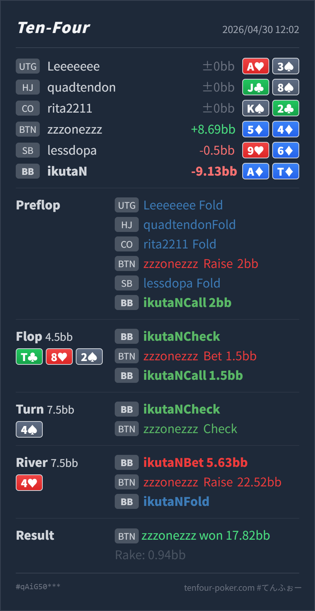

Preflop
良いA♦T♦ は call でも 3bet mix でも扱える上側の hand です。
GTO基準で大きな問題はありません。BTN 2BB open に対する BB A♦T♦ defend、flop T♣ 8♥ 2♠ の check-call、turn 4♠ の check は自然です。主な改善点は river 4♥ で 5.63BB into 7.5BB まで大きく thin value を打った点です。A♦T♦ はかなり強い top pair ですが、river で board が pair したあとに大きく打つと、worse Tx/8x から取りにくくなり、raise を受けたときに難しくなります。実戦の大きい raise に対する fold は良い判断です。
A♦T♦5♦4♦T♣ 8♥ 2♠ / 4♠ / 4♥A♦T♦ は BTN min open に対して call で問題ありません。3bet mix に回せる hand ですが、call は標準的です。T♣ 8♥ 2♠ は Hero が top pair top kicker を持っており、BTN の 1/3 pot c-bet に check-call するのは自然です。4♠ の check-check 後、BTN には air も残りますが、4x、slowplay、Tx、8x もまだ残ります。turn check back だけで強い hand を消し切らないのが大事です。4♥ の bet は value として成立しますが、サイズは小さめから中サイズの方が扱いやすいです。大きい raise への fold は、実戦の river raise が value 過多になりやすいためかなり堅実です。A♦T♦5♦4♦2BB, SB fold, BB callT♣ 8♥ 2♠ / 4♠ / 4♥1.5BB, BB call5.63BB, BTN raise 22.52BB, BB fold17.82BB
良いA♦T♦ は call でも 3bet mix でも扱える上側の hand です。
T♣ 8♥ 2♠良い
Hero は top pair top kicker で、small c-bet に対して十分強い bluff-catcher / value hand です。
4♠良いA♦T♦ はまだかなり強い top pair ですが、OOP から pot を急に膨らませるほどの nut hand ではありません。
4♥bet size は薄い、fold は良いA♦T♦ は value bet 可能ですが、large bet に raise された後は trips 以上にかなり負けています。
| 論点 | その場で置いた見立て | どこがズレやすいか | 次回の基準 |
|---|---|---|---|
| turn check back 後の相手レンジ | BTN が turn を打たなかったので、river はかなり弱い range に見える | turn check back には air だけでなく、showdown value、弱めの Tx/8x、pot control の 4x、一部 slowplay も残ります。特に BTN は preflop range が広いので suited 4x を完全には消せません。 | check back は「弱い寄り」ではあるが、強い hand をゼロにはしない |
| river large thin value | top pair top kicker なので、大きく打っても worse から取れそうに見える | paired river では、worse Tx/8x は大きい bet に対して苦しくなります。一方、call / raise してくる強い hand の密度は上がります。 | top pair の thin value は、worse を広く呼ぶ小さめから中サイズを基本にする |
| river raise 対応 | BTN の line が弱く見えるので、raise に bluff が多そうに見える | 実戦の river raise は、特に paired board では trips 以上に寄りやすいです。Hero は 4x blocker を持たず、raise 後は top pair が bluff-catcher になります。 | 大きい river raise には、top pair top kicker でも標準は fold 寄り |
| ストリート | その時点の見え方 | 実ハンドの位置づけ | 評価 | その場の一手 |
|---|---|---|---|---|
| Preflop | BTN 2BB open に対して BB は広く defend できます。suited broadway / suited ace は十分強い defend hand です。 | A♦T♦ は call でも 3bet mix でも扱える上側の hand です。 | 良い | call で問題ありません。相手が BTN から広く open し、fold to 3bet が高いなら 3bet も混ぜられます。 |
Flop T♣ 8♥ 2♠ | BTN は overpair、top pair、8x、straight draw、air を持ちます。BB も Tx/8x/2x、two pair、set を持てる board です。 | Hero は top pair top kicker で、small c-bet に対して十分強い bluff-catcher / value hand です。 | 良い | check-call が自然です。ここで raise すると worse を降ろしやすく、強い continue に寄せやすいので call が扱いやすいです。 |
Turn 4♠ | 65/76/53 などの draw が増え、4x は pair になります。BB は引き続き check range を保ちやすいです。 | A♦T♦ はまだかなり強い top pair ですが、OOP から pot を急に膨らませるほどの nut hand ではありません。 | 良い | check で問題ありません。BTN check back 後は river で薄く value を取りにいけます。 |
River 4♥ | board が pair し、BTN の一部 4x が trips になりました。一方で BTN の check back range には Tx/8x/99-55/A8 のような bluff-catcher も残ります。 | A♦T♦ は value bet 可能ですが、large bet に raise された後は trips 以上にかなり負けています。 | bet size は薄い、fold は良い | bet するなら 1/3 から 1/2 pot 程度が扱いやすいです。実戦の 5.63BB はやや大きく、raise された後は fold で問題ありません。 |
4x が自然に残ります。Tx/8x から取りたいなら、小さめから中サイズを優先します。4x blocker を持っておらず、相手の大きい raise に対して A♦T♦ は bluff-catcher です。4x blocker を持つ hand や、より上位の value hand を優先したいです。